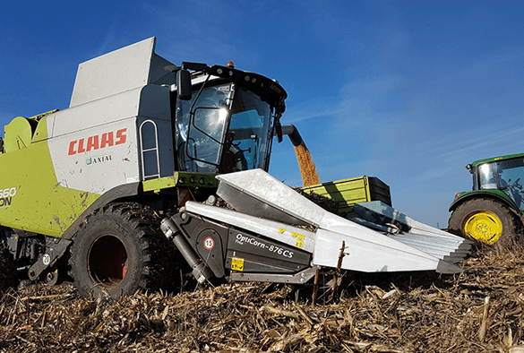
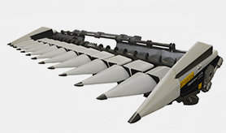
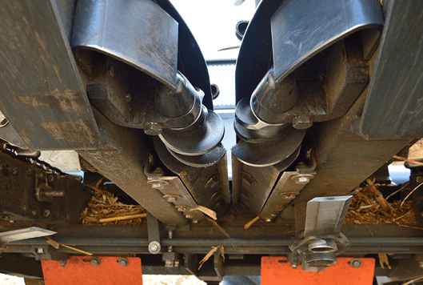
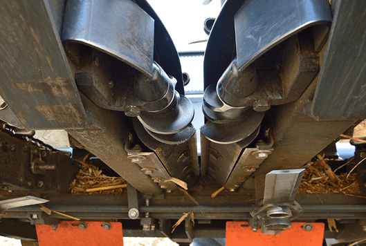

- 
- 
Преимущества жатки типа OptiSun - 6 рядная:
1. Транспортные цепи стеблей расположенные по рядам продвигают стебли подсолнечника без препятствий к режущему аппарату.
2. Между рядами находятся трясущиеся транспортёры семян, где не накапливается растительная масса, поэтому семена без потерь попадут к шнеку и наклонному транспортёру.
3. Подвижные делители поднимут поваленные стебли и так соберётся и их урожай.
4. Простое устройство привода обеспечивает простой и лёгкий уход за жаткой.
5. Пластиковые делители обеспечивают щадящее поднимание стеблей и являются стойкими к коррозии.
6. Жатка со специальной проставкой агрегатируется на наклонную камеру комбайна. Для правильного подпора проставки надо указать точный тип и год выпуска комбайна.
ОСТАЛИСЬ ВОПРОСЫ ?
Оставьте Ваши данные, и наш менеджер свяжется с вами в течение 7 минут
или позвоните нам по телефону +380 (68) 889-68-86
Подсолнечниковая жатка Optisun - 6 рядная
Подсолнечниковые жатка Optisun предназначены для уборки подсолнечника в полной зрелости с комбайном. Конструкция каркаса жатки является универсальной, поэтому адаптируется почти на все известные типы комбайнов. Изготовляем с жёсткой рамой 4,5,6,8,10,12 и 16 рядные, с междурядьем 50,55,60,70 и 76,2 см. Минимальная потеря зерна: 0,4-0,5% (при неповаленном и нормальной густоты подсолнечника).
Характеристики:
| Кол-во убираемых рядов: | 6 |
| Расстояние между рядами: | 50/55/60/70/76 см |
| Рабочая скорость: | 8 - 12 км/ч |
| Производительность: | 16 - 22 га/10ч |
| Масса: | 1270 кг. |
| Ширина жатки: | 4750 |
| Длина жатки: | 2920 |
| Высоа жатки: | 1520 |
или позвоните нам по телефону +380 (68) 889-68-86
 
